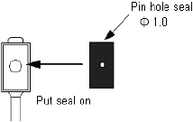
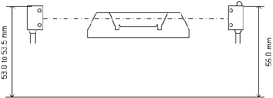
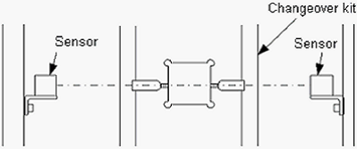
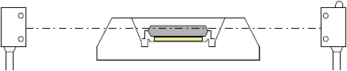
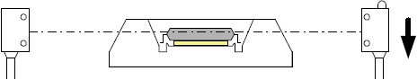
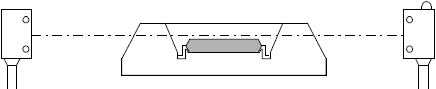
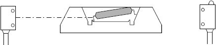

A2-3 How to adjust about device floating sensor of Input shuttle ( 3 )
Photoelectric sensor adjustment for NS-6000 ( without the adjuster )
Shuttle IC Floating Sensor Adjustment (without the adjuster)
1. Preparation
Put the seal with the pin hole Φ 1.0 on the light receiving side photoelectric sensor. * Detection is available without the seal, however, for the detection of small thin devices, it is easier with the pin hole seal to adjust the sensor and also the precision is stabilized.

2. Adjust the sensor height.
Light projection side - 53.0 to 53.5 mm from the base surface
Light receiving side - 55.0 mm from the base surface

3. Move the Shuttle 1 and 2 to the Loading side point P21, P22
4. Mount the changeover kit on the shuttle.
5. Confirm that the sensor green lamp is ON.
* If the green lamp is OFF, the light axis may be misaligned. Adjust the sensor position.

6. Place a spacer (a plain washer, etc.) below the device to space the device from the pocket by 0.5 to 0.7 mm. At this point, confirm that the both red and green lamps are ON.

7. Gradually lower the light receiving side sensor and fix at the position where the lamps status changes from green lamp is OFF -> red and green lamps are ON.

8. Take out the spacer from the shuttle and confirm that the green lamp is ON.
* If the green lamp is OFF, the sensor position is too low. Go back to the step 6, 7 and adjust the sensor position again.

9. Raise the device from the pocket and confirm that the sensor light is blocked.
(Red and Green lamps are ON.)
Change the device position and check the sensor light.
